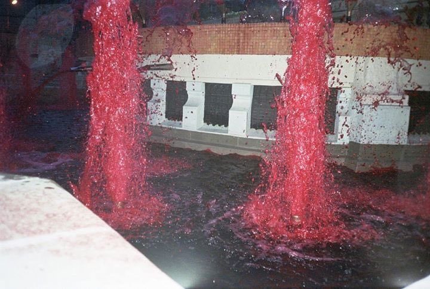

1
2

3
1. Now add text so that it floats above the images as per below. You will need to master the 'z-index' property to achieve this. Again, make it scrollable if you need to. This can be text relevant to your assignment, or just a placeholder. Remember to be deliberate with 'overflow'.
2. Having learnt this skill, you may also wish to try layering images, as in this site.
3. Implement custom fonts, font sizes, styling and colour so that your text looks good/appropriate, is legible, and contributes to an interesting and or harmonious design. Your goals and taste will determine your decision, but be deliberate about it. Try to use at least two different fonts.
If you are using a generic font that tends to be installed on machines already, you can simply use the 'font-family' CSS parameter for various elements.
If you want to use a custom font you must use the '@font-face' rule.
There are many font repositories online - you can download and install them simply by double clicking them, but if you want to use them on your site you will need to put them in a 'fonts' folder inside your website folder and point the browser to them just like an image or sound.
5
Implement custom fonts, font sizes, styling and colour so that your text looks good/appropriate, is legible, and contributes to an interesting and or harmonious design. Your goals and taste will determine your decision, but be deliberate about it. Try to use at least two different fonts.